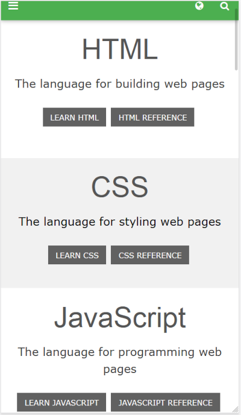
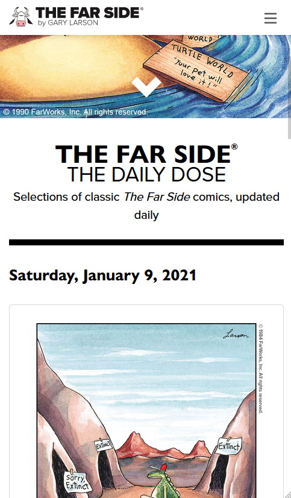
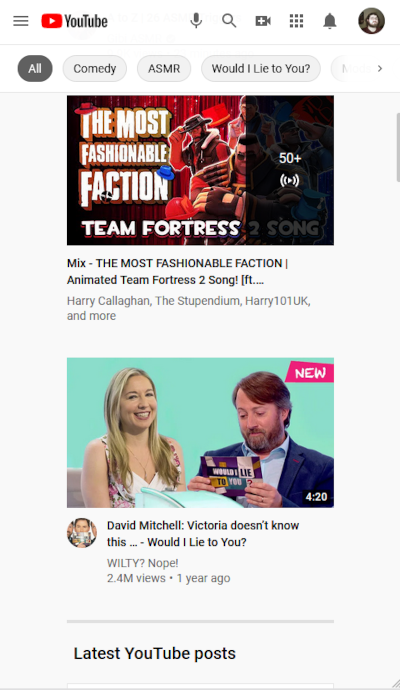

PARC: Proximity
W3Schools
When seen under a smaller viewport, W3Schools makes it easy to see the various lessons that they have to share are easily segregated from other languages.
Alignment
The Far Side
While it may have taken the Far Side decades to get online, it does not suffer for quality design. A lot of the site impresses me, but the thing I'll emphasize for this is the alignment. Each comic is centered as the focal point of the page.
White Space and Clean Design
Youtube
I knew Youtube was going to have some key principles, but I was taken aback by how much whitespace the mobile version has. On the left and the right, and between videos.